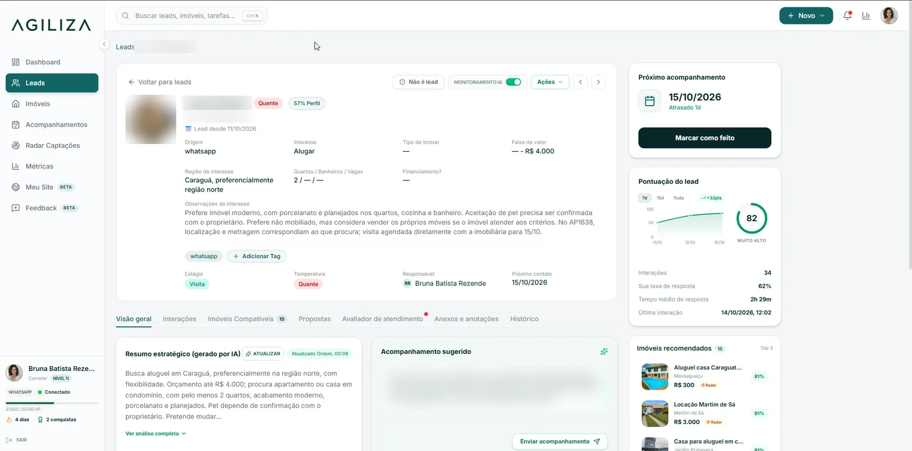
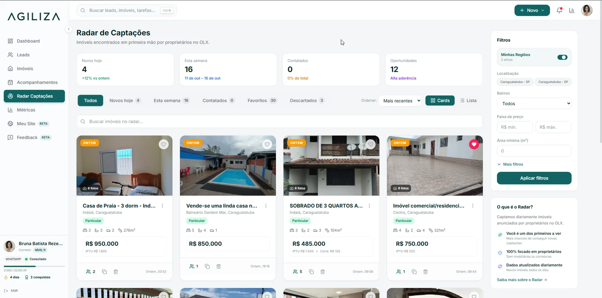
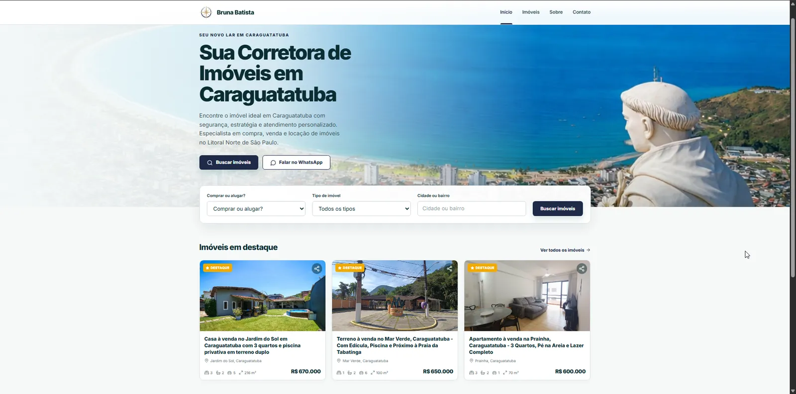

Agiliza: o CRM que se alimenta das conversasAgiliza: the CRM that feeds itself from conversations
Corretores perdem venda porque a memória vira infraestrutura: o contexto fica preso no WhatsApp e o CRM depende de digitação. Vi isso de perto na rotina da minha esposa, que é corretora.Real estate agents lose deals because memory becomes the infrastructure: context stays stuck in WhatsApp and the CRM depends on manual typing. I saw it up close in my wife's routine as an agent.
Um CRM "zero-click" que escuta o WhatsApp do corretor, extrai perfil, orçamento e intenção com LLM, pontua o lead, sugere o próximo acompanhamento e recomenda imóveis compatíveis. Inclui Radar de captação na OLX, verificação automática de disponibilidade com proprietários e site do corretor com domínio próprio.A "zero-click" CRM that listens to the agent's WhatsApp, extracts profile, budget and intent with an LLM, scores the lead, suggests the next follow-up and recommends matching properties. It includes an OLX listing radar, automated availability checks with owners and agent websites on custom domains.
- Em produção, com imobiliária pagante e usuários ativosIn production with a paying brokerage and active users
- Mais de 1.000 leads processados1,000+ leads processed
- Cerca de 10 h/semana de trabalho manual poupadas por corretorAbout 10 hours a week of manual work saved per agent
- O Radar contribuiu para mais de R$ 3 milhões em imóveis captados sem mídia pagaThe radar contributed to R$3M+ in listings sourced with zero ad spend
Supabase · PostgreSQL · RLS · n8n · LLM APIs · WhatsApp · React


